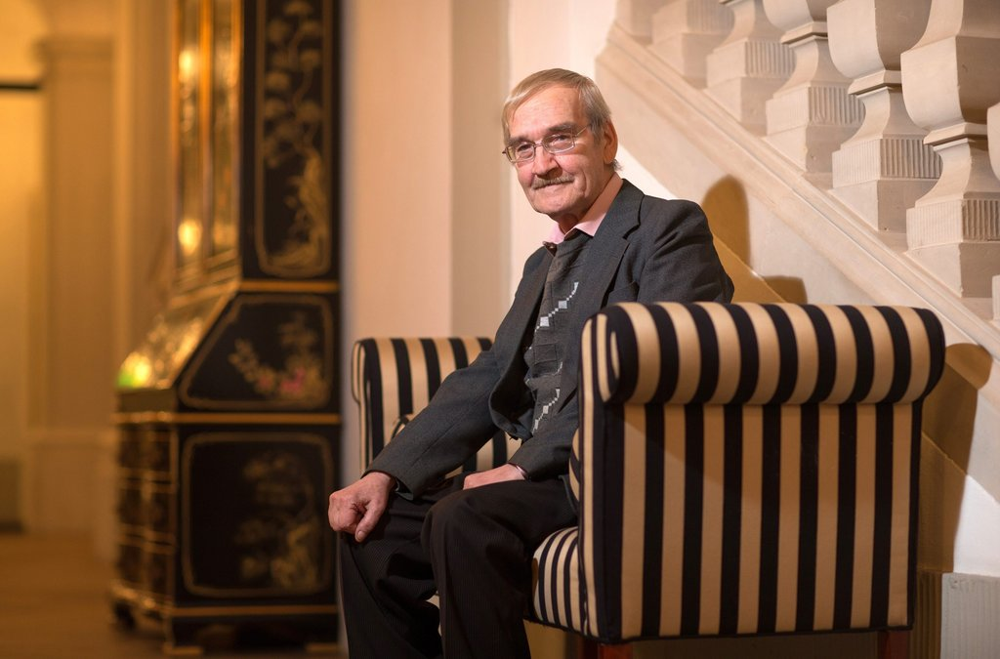

Stanislav Petrov
'A Man who Saved the world'
36 years ago, one man saved us from world-ending nuclear war
On Sept. 26, 1983, Oko ( the Soviet Union’s early-warning satellite system for nuclear attack) detected that the United States had launched five ballistic missiles, all headed toward the USSR
But as the alarms went off and screens flashing the word “LAUNCH” lit up, Petrov, who was just a few hours into his shift as duty officer at command center Serpukhov-15, remained calm
“For 15 seconds, we were in a state of shock,” he told The Washington Post in 1999. “We needed to understand, ‘What’s next?’”
It was Petrov’s gut feeling that led him to believe the launch reports were probably false.
“When people start a war, they don't start it with only five missiles,” he remembered thinking. “You can do little damage with just five missiles.”
He said his decision to stand down, the New York Times reported, was “at best, a ‘50-50’ guess.”
And, as Wired Magazine put it in 2007, “he hoped to hell he was right.”
That gut feeling and Petrov’s calm, common-sense analysis saved the world from potential catastrophe.
From NPR: That episode along with the 1962 Cuban Missile Crisis are considered to be the closest the U.S. and the Soviets came to a nuclear exchange. And while the Cuban Missile Crisis has been widely examined, Petrov's actions have received relatively little attention.
So, what did the satellite pick up instead? Petrov (and other sources) told the Washington Post that the satellite that signaled the false alarm had picked up the sun’s reflection atop the clouds, mistaking it for a missile launch.
That computer coding was eventually rewritten to filter out such information, the Post reported.
Petrov was initially chastized for not following protocol.
After the satellite made the potentially dangerous mistake, Petrov told RT in a famous 2010 interview
that his superiors were being blamed and then spread that blame to their subordinates.
He was even yelled at for not filling in a service journal.
Fifteen years later, after the classified incident became public, a German magazine picked up the story and Petrov went on to earn the German Media Prize in 2012 (other GMP winners include Nelson Mandela, Dalai Lama and Kofi Anan) and the Dresden Peace Prize in 2013.
A year later, a drama-documentary starring Kevin Costner told the story of Petrov, “The Man Who Saved the World.”
Petrov didn’t think he was a hero at all.
To read more on Wikipedia